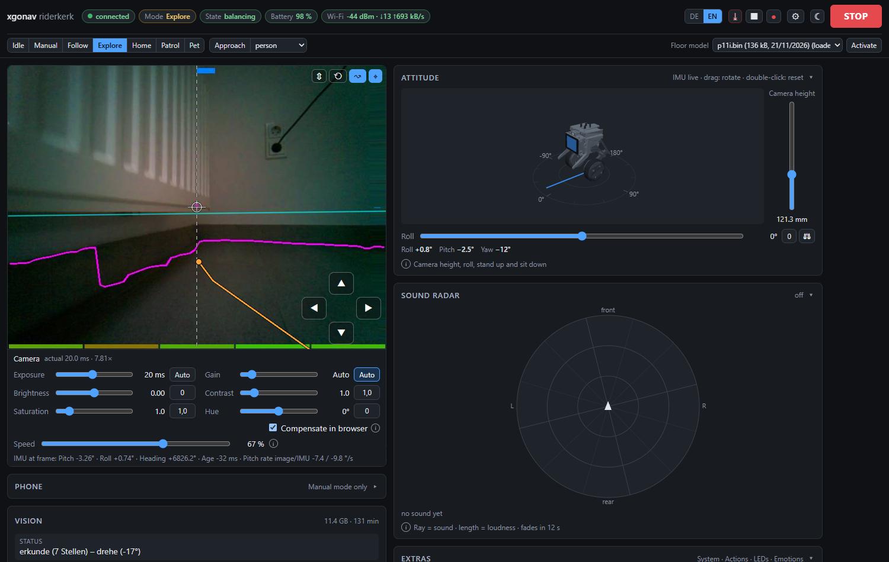

Web interface¶

| Item | Value |
|---|---|
| URL | https://<rider>/ (port 80 redirects here; old /xgonav/… paths are rewritten internally) |
| Stack | nginx (TLS on 443) → php-fpm pool xgonav → web/index.php, web/api.php |
| Backend | xgonav local API 127.0.0.1:8088 (output.web_host, web_port) |
| Auth | none — LAN only |
| Installed to | /opt/xgonav/web/ |
| LLM access | https://<rider>/mcp.php → MCP server (web/mcp.php), level in /etc/xgonav/mcp.json |
| Static pages | https://<rider>/tagebuch/ → web/tagebuch/index.html (dev diary, nginx only); https://<rider>/anleitung/ → web/anleitung/ (this manual, built on the PC by tools/build_manual.sh from docs/ with MkDocs Material, committed, nginx only) |
Layout (web/index.php)¶
| Area | Content |
|---|---|
| Header (fixed, page padded by its measured height) | host, connection, mode, state (firmware state: balancing / lying = set down (254) / fallen (0) / ready (253) / battery low / actuator fault / fault; mapped in the browser), battery (green ≥ 40 %, yellow ≥ 20 %, red < 20 %), pipeline, recording (only while switched on), WLAN (signal dBm: green ≥ −60, yellow ≥ −70, red below; ↓/↑ kB/s of wlan0), language DE/EN, Absetzen (254), Aufspringen (253, confirm), Aufstehen (arm, 255), pipeline start/stop, checkbox Aufzeichnen (raw recording, only shown with rawrec), Einstellungen (modal, see below), Ruhe, STOPP; below 1000 px the buttons show only symbols (⤓ ⤒ ↑ ▶/■ ⚙) |
| Left | camera image (WebSocket) with camera bar below it: exposure (ms, auto), gain (1–63.9×, auto), checkbox Bild am IMU-Nick festhalten (browser shifts the <img> by row_stand − row_imu via CSS, no pipeline cost; stored in localStorage; normal pose against the pure IMU pitch without image share); checkbox Roll ausgleichen (browser rotates the <img> by the IMU roll about the horizon point at cx; vertical edges stand vertical if the roll is right; localStorage xgonav.roll), checkbox Planerbahn (browser projects the planner path /status → plan (map coordinates) onto the image: pinhole over the floor plane with kamera (f, cam_h_m, cam_fwd_m) from /status, pose and horizon row from the nick=3 header, roll about (cx, horizon row) like freespace.roll_columns; segments behind the camera are clipped, end point as dot; orange; default on, localStorage xgonav.plan; no pipeline cost, /status +plan points at 1 Hz, /ws +16 bytes and one lock per frame), checkbox Bildmitte (browser draws the configured image centre over the <img> as SVG: dashed column cx = W/2 (driving direction, mounting yaw is in the lens table) from the frame header, circle at row H/2; follows both CSS transforms; default on, localStorage xgonav.mitte; no pipeline cost), actual values (help in the ⓘ tooltip); mode selector (Idle · Hand · Follow · Explore · Approach · Zum Start) + target class dropdown (classes from ?a=detector, reloaded after an xgonav restart, last choice in localStorage; disabled when YOLO is off), pipeline card with recording status, free space and status tiles, Bodenmodell dropdown + Aktivieren (nets from ?a=floornet, loaded once per page and after a restart or switch; disabled while net is not a symlink), raw status JSON |
| Lage (open by default, right column top) | 3D model of the Rider rotated by roll, pitch, yaw from imu_log: CAD model web/rider-model.bin via WebGL, legs follow the height/roll setpoints through the linkage, smoothed ~0.33 s, at minimum while state = 254 (sliders keep their value), see limitations; wheels turn by the encoder ticks from wheels_log (1024/rev, live packet imu.wheels, CAD model only) (built by tools/step_to_model.py from docs/Rider-Pi.STEP, loaded when Verlauf is first opened); without WebGL or the file, simple boxes on canvas 2D; fixed compass ring on the ground (0° = heading at ESP32 start, + = left), blue line = body forward direction; values below. Samples replayed smoothly ~0.4 s behind; rotation about the wheel axle. Drag (mouse/touch) to orbit the view (elevation 5–85°), double-click resets; view kept in localStorage xgonav.lage3d; live (5 s buffer, memory); open/closed kept in localStorage xgonav.lage. Controls: vertical Kamerahöhe slider beside the model (shows the camera height the floor geometry uses, in mm, from cam_h_gerade, including the × 0.921 correction, so about 8 % below a folding-rule reading; writes u8 61–205, u8 in the tooltip; shows u8 … until xgonav has answered once), roll −20..20° below |
| Fahren | D-pad, speed 5–100 %, Neu ausrichten (leveling pulse), ESP-Neustart (237, firmware patch 0018, only while not balancing); Extras card (collapsed, open/closed in localStorage xgonav.extras): Anleitung (opens anleitung/index.html, static), Schaubild (opens schaubild.html, static, no cost on the Pi), Herunterfahren (confirm dialog), actions 1–6, 4 LEDs + all off + strobe, brightness slider (persistent), display emotions |
| Raumkarte | room map PNG, view 3/6/10/16/24 m; mouse: drag to pan, wheel to zoom about the pointer (1 m..grid.size_m), double-click recentres on the Rider and follows again (touch: page scrolls, no pan). Buttons in three fixed groups: Karte (Speichern, sperren/entsperren, Zurücksetzen with confirm), Start · Pose (Start hier, Pose verwerfen: only with reloc, disabled while the pose is unknown), Route · Zonen (Route setzen, Sperrzone, Zonen löschen). Editing bar and pose warning are overlays on the map (top/bottom), groups are disabled while editing; nothing shifts the layout. Status: pose line with distance to start, one reserved line for explore/patrol. Below: start image (anchor of the start image check, /startbild.jpg, reloaded only for a new anchor; hidden after set-down or with unknown pose) |
| Verlauf (collapsed) | history charts, see below |
Language: German is in the HTML, English in the dictionaries EN/EN_HTML of index.php (keyed by the German text; long help blocks via data-i18n-html). Switched in the browser only, choice in localStorage xgonav.lang; free text from xgonav/api.php (status, errors) stays German. ?i18n=debug logs missing translations to the console. No cost on the Pi.
Live data: one WebSocket /live (see below) instead of polling; HTTP a=status only at load and after
commands. Map every 1 s (next request after previous finished).
Einstellungen (settings modal)¶
| Item | Value |
|---|---|
| Fields | all of xgonav/config.py (402), categories Hardware · Wahrnehmung · Karten · Verhalten · Ausgabe → TOML sections; help text = comments from config.py |
| Schema | web/config-schema.json, generated on the PC by python tools/config_schema.py; test_config_schema_aktuell fails if stale |
| Editing | line-based: only changed lines rewritten, indentation and comments kept; new keys appended to their section with # Web <date>; Default removes the line. Multi-line values: read-only (ssh) |
| Check | browser (type), PHP (schema type), Config.load (same as service start) |
| Backup | before every write: /var/lib/xgonav/config-backup/config.toml.<stamp>, last 50 kept, restore from the modal |
| Takes effect | after restart of xgonav (button Neu starten / Speichern und neu starten) |
| Rights | config.toml group video, 0664 (deploy/install.sh); sudoers deploy/sudoers-xgonav-restart |
| Pi cost | none in the pipeline; per save one Python start (~50 ms) |
History (Verlauf)¶
Canvas, no library; crosshair + values on hover/touch (charts). Data comes from /proc via PHP and
works without xgonav.
| Chart | Data | Window | Storage |
|---|---|---|---|
| CPU | load per core (%) from /proc/stat deltas × cur/max clock (% of max clock); temperature, clock (cur/max MHz) + loadavg in heading |
10 min | memory |
| WLAN | ↓/↑ kB/s from wlan0 byte-counter deltas, signal dBm (−90…−30), quality /70 in heading; from live packet field sys.wlan (1 Hz, also in a hidden tab) |
10 min | memory |
| Akku | battery % (from status or sys), ≤ 1 point / 30 s |
120 min | localStorage xgonav.akku; button Leeren |
- Battery is recorded while the page is open, also with the card collapsed. A second open tab merges into the same key.
- Open/closed state is kept in
localStorage(xgonav.verlauf). - Sign convention as firmware: roll + = right side down, pitch + = nose down, yaw + = left. When seq goes backwards (driver reloaded), the buffer is cleared. Animation runs only while the card is open and the tab is visible.
Manual driving¶
- Hold button / pointer / arrow keys / WASD. Switches to mode
manualautomatically. - Setpoint sent every 200 ms; xgonav stops after 0.5 s without setpoint.
- Limited to
robot.max_v/max_w. - No floor model, no arc check; fall detection and watchdogs active.
- Works with pipeline stopped (no camera, ~no CPU).
- Window blur releases all keys.
api.php¶
GET only for status, route, detector; all commands POST. Parameters are validated; invalid → HTTP 400.
| Request | Target | Range |
|---|---|---|
GET ?a=status |
xgonav /status (once; live via /live) |
|
GET ?a=detector |
xgonav /detector |
JSON on, geladen, backend, classes, modes, default |
GET ?a=floornet |
xgonav /floornet |
JSON modelle (name, kb, zeit), aktiv (symlink target), geladen, ist_link, ordner, blind, modes |
POST ?a=floornet&name=x.bin |
xgonav /floornet (timeout 20 s) |
name [A-Za-z0-9_.+-]{1,80}\.bin |
POST ?a=mode&name=..&target=.. |
xgonav /mode |
name ∈ idle, manual, follow, explore, approach, home, patrol, pet; target [a-z ]{1,30} |
POST ?a=stop |
xgonav /stop |
|
POST ?a=pipeline&on=0\|1 |
xgonav /pipeline |
|
POST ?a=ruhe&on=0\|1 |
xgonav /ruhe + emotion sleep (on only) + sudo -n /usr/local/sbin/xgo-ruhe on\|off |
always 200; JSON ok, ruhe, xgonav, system, fehler (both parts are tried even if one fails) |
POST ?a=record&on=0\|1 |
xgonav /record |
|
POST ?a=ausrichten |
xgonav /level |
409 if not balancing |
POST ?a=drive&v=..&w=.. |
xgonav /drive |
−1..1; mode manual only |
POST ?a=exposure&us=.. |
xgonav /exposure |
0 = auto, 100..frame period (max_us in /status, checked by xgonav) |
POST ?a=gain&g=.. |
xgonav /gain |
0 = auto, 1..63.9 |
POST ?a=map_reset |
xgonav /map/reset |
|
POST ?a=map_start |
xgonav /map/start |
|
POST ?a=map_save |
xgonav /map/save |
|
POST ?a=map_pose&aktion=start\|hier\|verwerfen |
xgonav /map/pose |
confirm or discard the pose in the room map ([reloc] enabled) |
POST ?a=led&i=0..3&c=%23rrggbb |
/proc/XGORider/leds/<i> |
|
POST ?a=led_brightness&p=0..100 |
/var/lib/xgonav/led_brightness, then /proc/XGORider/settings/led_brightness |
percent → n = p·255/100; persistent, set at boot (rc.local) and on xgonav start |
POST ?a=action&n=.. |
/proc/XGORider/action |
1..6, 237, 253, 254, 255; 254 and 237 (ESP32 restart) first call xgonav /stop?nur=pet (ends mode pet, so it cannot stand up by itself); 3..5 drive/turn by themselves and go to xgonav /action instead (409 with reason), directly to /proc only if xgonav is not running |
POST ?a=height&h=.. |
/proc/XGORider/height |
61..205 |
POST ?a=roll°=.. |
/proc/XGORider/roll |
−20..20 |
POST ?a=calibration&on=0\|1 |
settings/calibration |
API only, no UI button |
POST ?a=pitch_calibration |
settings/pitch_calibration |
API only, no UI button |
POST ?a=emotion&name=.. |
tools/emotion.sh play |
name must exist in /opt/xgonav/emotions |
POST ?a=shutdown |
plays sleep emotion, sudo systemctl poweroff |
|
GET ?a=wlan_status |
sudo -n xgo-wlan status |
JSON con, ssid, ip of wlan0; in the hotspot also clients, letzt |
GET ?a=wlan_scan |
sudo -n xgo-wlan scan |
JSON netze [ssid, signal, security], cached scan |
POST ?a=wlan_connect |
sudo -n xgo-wlan connect (password via stdin) |
body JSON {ssid, pw}; pw 8..63 or empty (open); over the hotspot: answers at once (hotspot: true); on failure the hotspot comes back, letzt holds the error |
POST ?a=wlan&on=0\|1 |
xgonav /wlan |
Wi-Fi setup like buttons C+D (QR code only) |
GET ?a=config |
schema web/config-schema.json + values parsed from /opt/xgonav/config.toml + backups |
JSON schema, werte, unlesbar, hash, schreibbar, sicherungen |
POST ?a=config_save&hash=.. |
rewrites changed lines of config.toml |
body JSON {"section.key": value\|null} (null = remove line → default; top level: allgemein.control_hz); type-checked against schema, then Config.load via /opt/xgonav/venv/bin/python; 409 if file changed since hash |
POST ?a=config_restore&name=..&hash=.. |
copies a backup back | name config.toml.YYYYMMDD-HHMMSS[-n] |
POST ?a=restart[&trotzdem=1] |
sudo -n systemctl --no-block restart xgonav |
409 in Ruhe (always) or while mode ≠ idle / balancing / recording (unless trotzdem=1) |
xgonav unreachable → HTTP 502 xgonav nicht erreichbar. Exposure/gain changes last until xgonav restarts.
xgonav local API (xgonav/web.py)¶
| Method | Path | Response / effect |
|---|---|---|
| GET | /status |
JSON (mode, pipeline, status, cmd, tracks, free, ttc, fps, loop_ms, loop_p95, loop_max, det_ms, grid, exposure, battery, balancing, state (firmware state, see driver.md), yaw_imu (heading in degrees from the IMU stream, all turns summed, not wrapped), height_mm, height_u8, cam_h_mm, cam_h_gerade [a, b] (mm = a + b·u8), pitch_src, pitch_deg, ego, odom, …); ?breakdown=1 adds per-section loop timing |
| GET | /ws |
WebSocket, overlay JPEGs; ?nick=2: per-frame IMU values in the header (ws_kopf, see Image transport); ?nick=3 (used by index.php): plus horizon row and map pose |
| GET | /frame?after=<idx> |
single JPEG newer than idx |
| GET | /startbild.jpg |
start image (anchor) as JPEG, encoded once per anchor; 404 without anchor |
| GET | /map.png?px=480&view=6[&cx=&cy=] |
room map; px 120..960, view 1..grid.size_m; centre cx,cy in map metres (both or neither; default Rider pose; clamped to ±grid.size_m); header X-Map-View: cx,cy,view,size; 404 if no map |
| POST | /mode?name=..&target=.. |
400 unknown mode, 409 not allowed |
| POST | /stop |
standstill, mode idle; aborts a running firmware action 3..5 |
| POST | /action?n=3\|4\|5 |
firmware action that drives (3, 4) or turns (5): keepalive and kernel watchdog off for its duration ([robot] action_tick_s), every control step checks its current and upcoming segments with safety() and the arc check, any reduction aborts (128/128 every 20 ms until its planned end). 409: not mode idle, not balancing, sleep mode, action running; 3/4 also without image processing or floor boundary. A blocked path at start is reported in /status status only |
| POST | /pipeline?on=0\|1 |
stop/start image processing; 409 in sleep mode |
| POST | /ruhe?on=0\|1 |
sleep mode on/off; /status field ruhe |
| POST | /wlan?on=0\|1 |
start/cancel Wi-Fi setup (wifi-setup.md); /status field wlan (state, text, detail, ssid, ip, hotspot) or null. /status field ortung (sound direction, audio.md): aktiv, kern, fehler, n, schwach, letzter or null, verlauf (≤ 12 sounds of the last 15 s as [age s, angle °, quality, level dB]). Card Schallradar draws them as rays (up = front, dashed twin to the rear because front/back cannot be told apart, length = level, fading over 12 s; rays and spokes are counter-rotated by the IMU yaw since each sound, so they keep pointing at the source while the Rider turns; the card requests the IMU samples of the live packet itself, also with Lage closed); drawn in the browser only while the card is open, no extra request (data from the 1 s live packet) |
| POST | /record?on=0\|1 |
switch raw recording; /status field aufzeichnung: an, laeuft, ordner, bilder, fehler, frei_mb (free down to record_min_free_mb, statvfs at most every 2 s), rate_mb_s (measured in the last recording, else estimate 2.2), rate_gemessen; the web view shows free space and remaining minutes left of the button |
| POST | /level |
leveling pulse (roll 0, 3 s roll_balance); 409 if not balancing |
| POST | /drive?v=..&w=..[&sicher=1] |
409 if not mode manual; sicher=1 (used by the MCP server): this setpoint passes safety() and the arc check like the autonomous modes, without manual_forward_gain; with the pipeline stopped it only turns |
| POST | /exposure?us=.., /gain?g=.. |
400 if out of range |
| POST | /bild?k=0.5..4&s=0.5..4&b=-0.5..0.5 |
contrast/saturation/brightness in the camera ISP (b optional; also reaches FloorNet and recordings; meta.jsonl cam.contrast/saturation/brightness), until restart; /status exposure.contrast/saturation/brightness; the web view can compensate with an SVG filter (checkbox, stored in the browser). Camera sliders (exposure, gain, brightness, contrast, saturation, hue) sit in a collapsible „Kamera“ panel below the image (open state stored in the browser); hue is display-only (SVG filter) |
| POST | /tempo?f=0.05..1 |
speed slider: factor for all drive/turn commands of all modes (after max_v/max_w), until restart; GET /status → tempo |
| POST | /map/reset |
clear room map, pose = start = 0 |
| POST | /map/start |
start point = current pose |
| POST | /map/save |
save now to grid.file; 404 if no map or no file |
| POST | /map/pose?aktion=start\|hier\|verwerfen |
start: Rider stands on the start point, pose jumps there; hier: shown pose is right; verwerfen: pose unknown (needs [reloc] enabled). 409 while lying, during home/patrol/explore |
| GET | /detector |
selectable targets (detector classes), computed on request only |
| GET | /floornet |
*.bin in [freespace] net_dir, active (symlink net) and loaded net; one directory read on request |
| POST | /floornet?name=x.bin |
switch floor model without restart: load + self-test in the web thread (old net keeps running), then repoint symlink net atomically, swap the net in FreeSpaceWorker (waits for a running inference), close the old one, floor boundary held restart_hold_s. Only in idle/manual (409), 409 if not loadable (old net stays), 400 for names outside net_dir, 500 if the symlink cannot be written |
Removed 2026-11-17: /stream (MJPEG), /ws?nick=1, /horizon, /horizon/edit, /horizon/cal, /horizon/delete and api.php?a=horizon|horizon_edit|horizon_cal|horizon_delete; /status has no horizon field any more, pitch_src is "imu" or "bild".
Mode rules: explore/approach/home need freespace.enabled (else 409); follow/approach need a running detector and a target in its classes (else 409); home also needs the room map; all modes except idle/manual need a running pipeline (else 409).
Image transport (WebSocket)¶
| Item | Value |
|---|---|
| Path | /ws (nginx → xgonav /ws, TLS terminates in nginx) |
| Message | binary: 4-byte frame index + JPEG; with ?nick=2 (header from web.ws_kopf): index, then 10 × float32 BE: row_stand, row_imu (horizon_row(0) / horizon_row(pure IMU pitch); NaN = no IMU), roll (deg, + = right side low, as the cyan line), cx, IMU pitch (deg), IMU heading (deg), age of the IMU sample (ms), pitch rate from image and from IMU (°/s), state (1 = IMU valid, 0 = pitch from the image only, NaN = no IMU); then the JPEG. All from the snapshot, nothing computed anew. ?nick=3: the same 10 values, then 4 × float32: horizon row at cx (as the cyan line), map pose x, y (m), th (rad) read at send time (NaN without room map) |
| Flow control | client sends ok per image; xgonav sends the next (newest) image only after ack |
| Ack timeout | 10 s → connection closed |
| Reconnect | client after 1 s |
| Pipeline state | client connects only while pipeline = läuft (and not sleep mode), closes otherwise; last image stays dimmed. xgonav sends an unchanged image once, no re-encode |
| Rate | ≤ output.web_fps (10) |
| Overlay | no status text lines in web frames (~10 ms saved per image); drawing ~1 ms per sent image (RiderPi) |
| JPEG | hardware encoder /dev/video31 (jpeg.py, native/jpegfast.cpp, output.jpeg_native), self-check at first image; fallback cv2.imencode (4.5 ms CPU per 640×480 image on the RiderPi); raw recording see below |
Replaced MJPEG (/stream, removed 2026-11-17): on weak Wi-Fi, TCP buffers queued up to 20 s of delay.
Live data (WebSocket)¶
Daemon tools/live.php (PHP CLI, unit xgonav-live.service, user www-data, Nice=10), not under web/
(would be callable via php-fpm). Reads /proc directly, works without xgonav. One shared read per tick for all tabs.
| Item | Value |
|---|---|
| Path | /live (nginx → 127.0.0.1:8089) |
| Idle | no client: blocks in stream_select, no /proc reads, 0 % CPU |
sys + status, 1 s (sleep mode 5 s) |
sys: t, cpu [[total, idle+iowait], …] per core (jiffies), temp_c, load, mhz [cur, max] (cpu0 cpufreq) or null, battery, height, roll, state, wlan "rx_bytes tx_bytes dBm quality" (- = unknown); status: xgonav /status verbatim (timeout 0.5 s) or null + status_fehler |
imu, 0.3 s if state = 1 (balancing), else 1 s; none in sleep mode |
seq, imu [[seq, t_ms, roll, pitch, yaw], …] (°), wseq, wheels [[seq, t_ms, ticks_left, ticks_right], …], state; only samples newer than the last sent per connection |
| Packing | sys and imu due together → one text frame {"sys":…,"status":…,"imu":…} |
| Client → server | imu 0\|1 [since wsince]: IMU on/off for this connection (Lage closed or tab hidden → 0); since/wsince after reconnect avoid duplicates |
| Reconnect | client after 1 s |
| Limit | imu_log holds 128 samples: at 1 s while lying, samples are skipped |
| Env (tests) | XGO_PROC, XGO_LIVE_PORT, XGO_STATUS_URL |
Intercom (WebSocket)¶
Talk to the Rider from the browser, mode manual only. Collapsible card Telefon right below the camera image (closed by default, localStorage xgonav.telefon), button Sprechen; the heading shows the state.
Daemon tools/sprech.php (PHP CLI, unit xgonav-sprech.service, user www-data + group audio, Nice=10);
WebSocket helpers shared with live.php in tools/ws.inc.php.
| Item | Value |
|---|---|
| Path | /sprech (nginx → 127.0.0.1:8090) |
| Rider → browser | arecord -D plughw:0,0 -f S16_LE -r 8000 -c 1, binary frames of 640 B (40 ms); dropped while > 0.5 s unsent |
| Browser → Rider | binary frames S16_LE 8 kHz mono → aplay -D plughw:0,0; backlog > 0.5 s cut to the newest 0.2 s |
| Server → client (text) | {"sprech": "an"\|"aus", "grund": …}, then close |
| Client → server (text) | mic 0\|1 (send Rider microphone), laut 0\|1 (speaker) |
| Admission | xgonav /status mode == "manual" and not sleep mode; one call at a time (second browser: busy) |
| End | browser closes, mode leaves manual or xgonav unreachable (checked every 1 s), arecord/aplay ends; then both processes are killed, hw:0,0 free for sound direction (retry ≤ [ortung] retry_s 10 s) |
| Idle | no call: no arecord/aplay, blocks in stream_select, 0 % CPU |
| Browser | getUserMedia (echo cancellation, noise suppression, AGC; needs HTTPS), AudioWorklet: 3.5 kHz low-pass (windowed sinc, Blackman, 127 taps, evaluated only at the 8 kHz output points; until 2026-11-21 a box filter that folded 4–24 kHz into the voice band) + decimation to 8 kHz, 400 Hz high-pass (Butterworth 4th order; the Rider speaker produces almost only harmonics below ~300 Hz: measured +16 dB at 150 Hz, +7 dB at 250 Hz over the fundamental), then gain to the Rider 100–1600 % (default 300 %, localStorage xgonav.sprechhin2) with a soft tanh limiter up to 0.9 (speaker measurements with the old class-D boost 4, which itself distorted; now boost 0, docs/audio.md); playback with 120 ms jitter buffer (> 0.4 s → cut to 0.12 s), linear upsampling, volume here 0–400 % (localStorage xgonav.sprechlaut) |
| Echo | the Rider's speaker reaches its own microphones (−17 dBFS), our voice returns after the round trip (~0.5–1.5 s: Wi-Fi, aplay/arecord buffers, jitter buffer). Browser-side echo gate: level envelopes of sent and received audio in 40 ms bins, every 1 s the best log-level correlation over 0–1.6 s delay votes into a decaying histogram, coupling = median received/sent. A Rider frame is cut to 5 % when we spoke loudly within ±240 ms of the estimated delay and it is not clearly louder (3×) than the expected echo (double talk passes); without an estimate the whole 0–1.7 s window after own speech. Until 2026-11-21 it dimmed only 300 ms after own speech, so most of the echo came through. Simulated only (echo_sim), not heard. Option Drücken zum Sprechen (talk button or space bar; Rider dimmed while held; localStorage xgonav.sprechptt) |
| Cost on the Pi | arecord + aplay (8 kHz mono, ALSA plug resampling) + PHP loop ≈ 25 wake-ups/s: ≲ 1 % of a core, only during a call; Wi-Fi 2 × 16 kB/s; nothing in xgonav |
| Limits | during a call other aplay sounds (web, rc.local) fail (device busy) |
| Camera → display | checkbox Kamera senden (only during a call), 5 (default)/10/15 frames/s (localStorage xgonav.sprechfps), mirrored preview; second WebSocket /sprech?bild (own TCP connection, audio not held up) |
| Display frame | browser crops to 320×240 (centre, unmirrored), converts to RGB565 LE, one binary frame of 153 600 B; sends only with bufferedAmount 0; other lengths dropped |
| Display write | PID into /tmp/lcd0.owner, wait 0.3 s (emotion player / lcd.py release the FIFO), open FIFO r+ non-blocking, partial writes kept so frames stay whole; one frame in flight + newest waiting; owner touched per frame |
| Emotion meanwhile | foreign PID in owner: current frame finished, FIFO closed, frames dropped until owner empty, then taken over again |
| Display end | image socket closes or call ends: rest written (≤ 1 s), FIFO closed, owner cleared, emotion cute played |
| Server → client (image) | {"bild": "an"\|"aus", "grund": …}; refused without call, second image busy, no FIFO |
| Cost on the Pi (image) | raw frames, no decoding. Measured 2026-11-21 (% of a core): 5/s nginx 4.9, PHP 3.3, st7789_server 1.0 (≈ 9 %, Wi-Fi 0.75 MB/s); 10/s nginx 9.0, PHP 5.7, st7789_server 2.2 (≈ 17 %, 1.5 MB/s); nothing in xgonav |
| Env (tests) | XGO_SPRECH_PORT, XGO_STATUS_URL, XGO_ARECORD, XGO_APLAY (full command lines), XGO_LCD_FIFO, XGO_LCD_ENDE |
Pipeline stop¶
POST /pipeline?on=0: camera stopped, no image processing, standstill, mode idle. CM4 CPU of the
service ~340 % → ~4 %. Web stays reachable. After start: drives only once a mode is chosen.
With full processing, the charging dock current is insufficient to charge.
Sleep mode (Ruhe)¶
Header button Ruhe (with confirmation). Woken by Wecken in the web UI or by the MCP server (ruhemodus).
| Part | On | Wake |
|---|---|---|
| Rider | set down (action 254) if balancing | stays lying |
| xgonav | pipeline off, mode idle, raw recording off; imu, wheels threads idle; robot thread reads state/battery every ruhe.tick_s (1 s), no keepalive; no LCD, no emotions, no WebSocket re-encode; pipeline and modes other than idle → 409 |
threads resume; pipeline stays off |
Driver (settings/) |
imu_hz, imu_stream_hz → 0, sleep_ms_on_loop → ruhe.sleep_ms_on_loop (1000); old values kept in memory |
old values written back |
CPU (xgo-ruhe, root) |
governor saved to /run/xgo-ruhe.gov, all cores powersave |
saved governor (fallback ondemand) |
Wi-Fi (xgo-ruhe, root) |
iw dev wlan0 set power_save on |
power_save off (also default via /etc/NetworkManager/conf.d/xgonav-wifi-powersave.conf; with power save ping 535 ms avg / 1.5 s max, without 20 ms, 2026-11-18) |
Display (api.php) |
plays sleep (~4 s, before the governor change); last frame (closed eyes) stays |
unchanged until xgonav or an emotion writes the next frame |
| Page | cover with Wecken + battery; image WebSocket closed, no map polling; live packet every 5 s without IMU | normal rates |
- The display stays on: it cannot be switched off (DISPOFF + SLPIN via SIGUSR1 to
st7789_serveris no longer sent;xgo-ruhe offstill sends SIGUSR2). Backlight (GPIO0 perconstants.h) is not switched; untested. POST ?a=ruhe&on=1returns after the animation (~4 s).- The ESP32 keeps running (control loop, BLE, amber LEDs).
- If xgonav restarts during sleep mode, the governor stays
powersaveuntil Ruhe + Wecken. - If NetworkManager reconnects during sleep mode, Wi-Fi power save is off again (NM setting).
Raw recording (xgonav/rawrec.py)¶
| Item | Value |
|---|---|
| Writes | JPEG (quality 92) + meta.jsonl per frame, format for tools/replay_raw.py and tools/floornet/ |
| Target | output.record_dir/YYYYMMDD-HHMMSS (default ~/fahrt, as service user) |
| JPEG | hardware encoder q95 (output.record_jpeg_q_hw), fallback libjpeg q92; meta.jsonl "jpeg" per image (since 2026-11-19) |
| Condition | switch on, state = balancing, pipeline running; only frames newer than the start |
| Set down | closes the recording; switch stays on, next stand-up starts a new subdirectory, no empty directories |
| Off by itself | service restart; free space < output.record_min_free_mb or write error (reason shown next to the button) |
| Cost on the Pi | off: no thread. On, lying: 5 attribute reads/s. Recording: one JPEG per frame in its own thread on render_cpus, never in the main loop; frames are skipped if it falls behind (gaps in idx) |
Overlay colours¶
| Colour | Meaning |
|---|---|
| magenta | floor boundary from FloorNet, mapped onto the shown frame |
| cyan | horizon from the IMU pitch of the frame (rolled by the IMU roll) |
| bottom bars | free space per sector |
| red | target track |
| violet | image motion |
| blue | drive command |
Route, no-go zones, patrol¶
| Control | Effect |
|---|---|
| Route setzen | click points on the map, optional loop, POST api.php?a=route&pts=x,y;x,y&loop=0\|1 |
| Sperrzone | click at least 3 corners, added to the existing zones (zones=x,y;x,y;x,y\|...) |
| Zonen löschen | nozones=1 |
| Karte sperren | POST api.php?a=map_lock&on=0\|1 |
| Streife | mode patrol after a confirmation dialog (bestaetigt=1) |
Coordinates are metres in the map frame (top = +x, left = +y). GET api.php?a=route returns points, loop, zones, map_id.